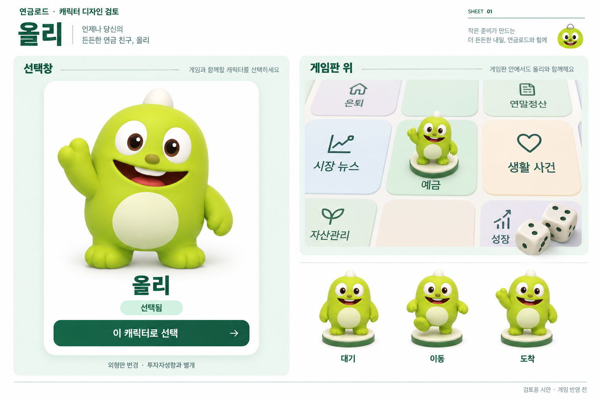

A-1의 분위기를 이어가는 다섯 친구
게임판 위에서 만나는
올원프렌즈
올리 · 원이 · 단지 · 달리 · 코리
선택창의 큰 모습부터 게임판의 작은 말까지, 캐릭터별로 비교해 보세요.
부드러운 3D 질감작아도 구분되는 실루엣외형과 투자자성향 분리
CHARACTER 01 / 05
올리

이 캐릭터에서 볼 부분
농협 공식 원형과 비교하기
공식 소개 이미지입니다. 위의 3D 시안은 이 원형을 참고해 새로 생성했습니다.
검토 의견
의견은 이 브라우저에만 저장되며 게임에는 반영되지 않습니다.
FIVE FRIENDS, ONE STYLE
다섯 시안 한눈에 비교
이번에 검토할 범위
선택창같은 크기의 전신, 캐릭터 이름, 선택 상태를 함께 표시합니다. 캐릭터마다 수익률이나 투자성향을 부여하지 않습니다.
게임판얇은 받침과 작은 전신을 사용합니다. 말의 크기를 칸 폭에 맞추고 이름이 보이는 공간을 확보하는 방향입니다.
움직임대기 → 짧은 점프 이동 → 도착 반응으로 연결하는 포즈 제안입니다. 기존 두 주사위 굴림과 말의 이동은 유지합니다.
시안 속 게임판은 크기·배치를 비교하기 위한 확대 예시입니다. 실제 24칸 경로·칸 이름·아이콘·게임 규칙의 변경안은 아닙니다. 생성 이미지 속 부가 문구도 확정 카피가 아닙니다. 채택 후 투명 배경의 게임용 자산과 실제 화면 연결을 별도로 제작합니다.